전기공사기사 (2011-10-02 기출문제)
1과목: 전기응용 및 공사재료
1. 2[kW]의 전열기를 사용하여 10[℃]의 물 10[ℓ]을 60[℃]로 가열하기 위해 필요한 시간[min]은?
- 15.4
- 16.4
- 17.4
- 18.4
(정답률: 71%)

2. 폭 10[m], 길이 20[m], 높이 4[m]인 방의 실지수는?
- 6.67
- 3.42
- 2.27
- 1.67
(정답률: 78%)
3. 물리 측광용 수광기에 사용되지 않는 것은?
- 광전지
- 발광 다이오드
- 광전관
- 광전증 배관
(정답률: 77%)
4. 다음 중 온도가 전압으로 변환되는 것은?
- 차동 변압기
- CdS
- 열전대
- 광전지
(정답률: 86%)
5. 모노레일 등에 주로 사용되고 있는 전차선로의 가선형태는 무엇인가?
- 제 3궤조 방식
- 가공 복선식
- 가공 단선식
- 강체 복선식
(정답률: 81%)
6. 1시간에 18[m3]로 솟아나는 지하수를 5[m] 높이에 양수하고자 한다. 5[kW] 전동기를 사용한다면 시간당 몇 분씩 운전하면 되는가? (단, 펌프효율 75[%], 손실계수 1.1이다.)
- 약 5분
- 약 10분
- 약 12분
- 약 18분
(정답률: 61%)
7. 다음의 1차 전지에 대한 설명 중 잘못된 것은?]
- 망간 건전지는 일명 르클랑셰 전지라고도 하며, 기전력은 1.5[V]이다.
- 산화은 전지는 전자시계, 계산기 등에 사용되며 기전력은 1.55[V]이다.
- 수은 전지는 주로 전자기기, 카메라 등에 사용되며 기전력은 약 3[V]정도 이다.
- 리튬전지는 메모리 백업 등의 전자응용 부품에 사용되며, 기전력은 약 3[V]정도 이다.
(정답률: 64%)
8. 식염을 전기분해할 때 양극에서 발생되는 가스는?
- 산소
- 수소
- 질소
- 염소
(정답률: 72%)
9. 다음 단상 유도 전동기 중 기동 토크가 가장 큰 것은?
- 반발 기동형
- 콘덴서 기동형
- 세이딩 코일형
- 분상 기동형
(정답률: 89%)
10. 2종의 금속이나 반도체를 접합하여 열전대를 만들고 기전력을 공급하면 각 점에서 열의 흡수, 발생이 일어나는 현상은?
- 펠티어 효과
- 제벡 효과
- 핀치 효과
- 톰슨 효과
(정답률: 86%)
11. GIS(GAS INSULATED SWITCHGEAR)에 사용되는 절연체는?
- 질소 GAS
- SF6 GAS
- 절연유
- 수소 GAS
(정답률: 90%)
12. 특고압 또는 고압회로 및 기기의 단락보호 능력을 갖는 것은?
- 플러그 퓨우즈
- 통형 퓨우즈
- 고리 퓨우즈
- 전력 퓨우즈
(정답률: 83%)
13. 분전반에 관한 설명으로 옳지 않은 것은?
- 일반적으로 한 개의 분전반에 2가지 전원을 공급할 수 있다.
- 개폐기를 쉽게 개폐할 수 있는 장소에 시설한다.
- 상시 충전부를 노출하지 않는 구조이어야 한다.
- 노출하여 시설하는 분전반의 재료는 불연성의 것이다.
(정답률: 78%)
14. 접지 전극의 재료가 아닌것은?
- Al 봉
- 동봉
- 동판
- 철관
(정답률: 70%)
15. 연축전지의 1셀(Cell)당 공칭 전압은?
- 1.2[V]
- 1.5[V]
- 2.0[V]
- 2.4[V]
(정답률: 75%)
16. 차단기 및 계전기 등의 접점재료가 갖추어야 할 요건과 거리가 먼 것은?
- 열전도가 적을 것
- 융점, 비점이 높을 것
- 내식성, 내산화성이 우수할 것
- 접촉면이 융착하지 않을 것
(정답률: 66%)
17. 서비스캡 이라고도 하며 노출배관에서 금속관 배관으로 할 때 관단에 사용하는 재료는?
- 터미널 캡
- 부싱
- 로크너트
- 엔트런스 캡
(정답률: 69%)
18. 저압 배전선로에서 전선을 수직으로 지지하는데 사용되는 장주용 자재명은?
- 경완철
- LP 애자
- 현수 애자
- 래크
(정답률: 65%)
19. 비닐외장 케이블을 구부리는 경우 굴곡부의 굴곡반경은 케이블 완성품 외경의 몇 배 이상으로 하여야 하는가? (단, 단심인 경우는 제외)
- 6
- 8
- 10
- 12
(정답률: 60%)
20. 애자사용 공사에서 바인드선의 최소 굵기[mm]는?
- 0.9
- 1.0
- 1.2
- 1.6
(정답률: 50%)
2과목: 전력공학
21. 다음 중 가공 지선의 설치 목적으로 볼 수 없는 것은?
- 유도뢰에 대한 정전 차폐
- 전압강하의 방지
- 직격뢰에 대한 차폐
- 통신선에 대한 전자유도 장해 경감
(정답률: 20%)
22. 배전선의 손실계수 H와 부하율 f와의 관계는?
- 0≤H2≤F≤H1
- 0≤F2≤H≤F≤1
- 0≤H≤F2≤F≤1
- 0≤F≤H2≤H≤1
(정답률: 19%)
23. 3상 4선식 배전선로에서 배전 전압을 2배로 승압하여 동일한 부하에 전력을 공급할 때, 전력 손실은 승압 전보다 어떻게 되는가?
- 1/4로 줄어든다.
- 1/2로 줄어든다.
- 2배로 된다.
- 불변이다.
(정답률: 17%)
24. 한류 리액터를 사용하는 가장 큰 목적은?
- 충전 전류의 제한
- 접지 전류의 제한
- 누설 전류의 제한
- 단락 전류의 제한
(정답률: 23%)
25. 배전 선로의 고장 전류를 차단 할 수 있는 것으로 가장 알맞은 것은?
- 단로기
- 구분 개폐기
- 컷아웃 스위치
- 차단기
(정답률: 21%)
26. 송전선로에서 송수전단 전압 사이의 상차각이 몇[°] 일 때, 최대 전력으로 송전할 수 있는가?
- 30
- 45
- 60
- 90
(정답률: 14%)
27. 그림과 같은 회로의 일반 회로 정수로 옳지 않은 것은?
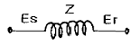
- A=1
- B=Z=Z+1
- C=0
- D=1
(정답률: 21%)
28. 송전선의 유효접지 계통에서 피뢰기의 정격 전압을 결정 하는데 가장 중요한 요소는 무엇인가?
- 선로 애자련의 충격 섬락 전압
- 내부 이상 전압 중 과도 이상 전압의 크기
- 1선 지락 고장시 건전상의 대지 전위, 즉 지속성 이상전압
- 유도뢰의 전압의 크기
(정답률: 17%)
29. 다음 중 화력 발전소에서 열사이클의 효율 향상을 위하여 채용된 방법이 아닌 것은?
- 절탄기, 공기 예열기의 설치
- 재생, 재열 사이클의 채용
- 조속기의 설치
- 고압, 고온 증기의 채용과 과열기의 설치
(정답률: 23%)
30. 무효전력 흡수 능력면에서 동기 조상기가 전력용 콘덴서 보다 유리한 점으로 가장 알맞은 것은?
- 필요에 따라 용량을 수시로 변경할 수 있다.
- 진상 전류 이외에 지상 전류를 취할 수 있다.
- 전력 손실이 적다.
- 선로의 유도 리액턴스를 보상하여 전압강하를 줄인다.
(정답률: 19%)
31. 전선의 자체 중량을 W1, 부착 빙설의 중량을 W2, 수평 풍압 하중을 W3라 할 때 합성 하중은?
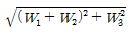
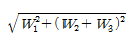
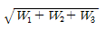
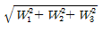
(정답률: 17%)
32. 화력 발전의 기본 열사이클인 랭킨 사이클에서 단열 압축 과정이 행하여지는 곳은?
- 보일러
- 터빈
- 복수기
- 급수펌프
(정답률: 11%)
33. 보호 계전기 중 발전기, 변압기, 모선 등의 보호에 사용되는 것은?
- 비율 차동 계전기
- 과전류 계전기
- 과전압 계전기
- 유도형 계전기
(정답률: 19%)
34. 다음 중 환상선로의 단락 보호에 주로 사용되는 계전방식은?
- 비율 차동 계전방식
- 방향 거리 계전방식
- 과전류 계전방식
- 선택 접지 계전방식
(정답률: 23%)
35. 3상용 차단기의 용량은 그 차단기의 정격전압과 정격 차단 전류와의 곱을 몇 배한 것인가?
- 1/√2
- 1/√3
- √2
- √3
(정답률: 24%)
36. 배전선에 부하 분포가 그림과 같이 균등하게 분포되어 있을 때 배전선 말단까지의 전압강하는 전부하가 집중적으로 배전선 말단에 연결되어 있을 때의 몇[%]가 되는가?
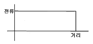
- 20
- 33
- 50
- 100
(정답률: 17%)
37. 단권 변압기를 초고압 계통의 연계용으로 이용할 때 장점이 아닌 것은?
- 2차측의 절연 강도를 낮출 수 있다.
- 동량이 경감된다.
- 부하 용량은 변압기 고유 용량보다 크다.
- 분로 권선에는 누설 자속이 없어 전압 변동률이 작다.
(정답률: 8%)
38. 장거리 대전력 송전을 위해 직류 송전 방식을 채택하는 이유가 아닌 것은?
- 선로의 리액턴스가 없으므로 안정도가 높다.
- 주파수가 서로 다른 계통을 연계할 수 있다.
- 고조파 발생이 저감된다.
- 도체의 표피효과가 없다.
(정답률: 12%)
39. 전선의 반지름 r[m], 소도체간의 거리 ℓ[m], 소도체수 2, 선간거리 D[m]인 복도체의 인덕턴스 L은 L=0.46⑤P+0.025[mH/㎞]이다. 이 식에서 P에 해당되는 값은?
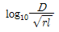
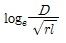
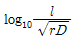
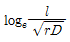
(정답률: 20%)
40. 화력발전소에서 발전 효율을 저하시키는 원인으로 가장 큰 손실은?
- 소내용 동력
- 터빈 및 발전기의 손실
- 연돌 배출 가스
- 복수기 냉각수 손실
(정답률: 18%)
3과목: 전기기기
41. 교류 전동기에서 브러시 이동으로 속도 변화가 편리한 전동기는?
- 농형 전동기
- 시라게 전동기
- 동기 전동기
- 2중 농형 전동기
(정답률: 18%)
42. 일반적인 변압기의 무부하손 중 효율에 가장 큰 영향을 미치는 것은?
- 히스테리시스손
- 와전류손
- 여자 전류 저항손
- 유전체 손
(정답률: 18%)
43. 동기 발전기에서 뒤진 역률일 때 다음의 관계 중 맞는 것은? (단, V : 단자 전압, E : 내부 기전력, E0 : 공칭 유도 기전력, ∅ : 역률각 θ : 공칭 유도 기전력과 부하 전류와의 각)
- V < E < E0, θ > ∅
- V < E < E0, θ < ∅
- V > E > E0, θ > ∅
- V > E > E0, θ > ∅
(정답률: 15%)
44. 정현파형의 회전자계 중에 정류자가 있는 회전자를 놓으면, 각 정류자편 사이에 연결되어 있는 회전자 권선에는 크기가 같고 위상이 다른 전압이 유기된다. 정류자 편수를 k라 하면 정류자편 사이의 위상차는?
- π/k
- 2π/k
- k/π
- k/2π
(정답률: 15%)
45. 전기자 도체수 360, 극당 자속 0.06[wb]인 6극 중권 직류 전동기가 있다. 전기자 전류가 50[A]일 때의 발생 토크[kg ‧ m]는?
- 약 17.5
- 약 18.2
- 약 18.6
- 역 19.2
(정답률: 14%)
46. 다음 중 서보 전동기가 갖추어야 할 조건이 아닌 것은?
- 기동 토크가 클 것
- 토크 속도 곡선이 수하 특성을 가질 것
- 회전자를 굵고 짧게 할 것
- 전압이 0이 되었을 때 신속하게 정지할 것
(정답률: 17%)
47. 3상 유도전압 조정기의 동작원리 중 가장 적당한 것은?
- 회전자계에 의한 유도 작용을 이용하여 2차 전압의 위상 전압 조정에 따라 변화한다.
- 교변 자계의 전자유도 작용을 이해한다.
- 충전된 두 물체 사이에 작용하는 힘이다.
- 두 전류 사이에 작용하는 힘이다.
(정답률: 17%)
48. SCR에 관한 설명으로 적당하지 않은 것은?
- 3단자 소자이다.
- 적은 게이트 신호로 대전력을 제어한다.
- 직류 전압만을 제어한다.
- 스위칭 소자이다.
(정답률: 22%)
49. 분권 전동기의 정격 회전수가 1500[rpm]이다. 속도 변동률이 5[%]라 하면, 공급 전압과 계자 저항의 값을 변화시키지 않고 이것을 무부하로 하였을 때의 회전수 [rpm]는?
- 1265
- 1365
- 1435
- 1575
(정답률: 17%)
50. 단상 변압기의 1차전압 E1, 1차 저항 r1, 2차 저항 r2, 1차 누설리액턴스 x1, 2차 누설리액턴스 x2, 권수비 a 라고 하면, 2차 권선을 단락했을 때의 1차 단락 전류는?
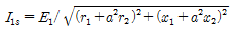
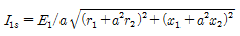
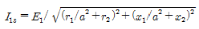
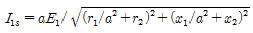
(정답률: 16%)
51. 유도 전동기에서 2차 권선저항이 작아지면 슬립 s는?
- s는 커진다.
- s는 작아진다.
- s는 변함이 없다.
- s는 일정하지 않다.
(정답률: 14%)
52. 동기 발전기에서 기전력의 파형을 좋게 하고 누설 리액턴스를 감소시키기 위하여 채택한 권선법은?
- 집중권
- 분포권
- 단절권
- 전절권
(정답률: 18%)
53. 같은 정격전압에서 변압기의 주파수만을 높이면 다음에서 증가하는 것은?
- 여자전류 증가
- 동손 증가
- 철손 증가
- %임피던스 증가
(정답률: 12%)
54. 정격전압 220[V], 무부하 단자전압 230[V], 정격 출력이 44[kW]인 직류 분권 발전기의 계자 저항이 22[Ω], 전기자 반작용에 의한 전압 강하가 5[V]라면 전기자 회로의 저항은 약 몇 [Ω]인가?
- 약 0.018
- 약 0.024
- 약 0.038
- 약 0.042
(정답률: 13%)
55. 슬롯수 32, 코일 변수 64, 극수 4인 1구 단중 중권기를 같은 극수의 2구 2중 파권기로 변경하면 단자 전압은 약 몇 배가 되는가?
- 0.5
- 1
- 1.5
- 2
(정답률: 15%)
56. 1[MVA], 3300[V], 동기 임피던스 5[Ω]의 2대의 3상 교류 발전기 병렬운전 중 한쪽 발전의 계자를 강화해서 각 상 유도기전력(상전압) 사이에 200[V]의 전압차가 생기게 했을 때, 두 발전기 사이에 흐르는 무효횡류는 몇[A] 인가?
- 40
- 30
- 20
- 10
(정답률: 13%)
57. 3300/220[V] 변압기 A, B의 용량이 각각 400[kVA], 300[kVA]이고, %임피던스 강하가 각각 2.4[%]와 3.2[%] 일 때, 그 2대의 변압기에 걸 수 있는 합성 부하 용량은 몇 [kVA]인가?
- 171
- 450
- 625
- 700
(정답률: 15%)
58. 동기 발전기의 단자 부근에서 단락이 일어났다고 하면 단락 전류는?
- 계속 증가한다.
- 발전기가 즉시 정지한다.
- 일정한 큰 전류가 흐른다.
- 처음은 큰 전류이나 점차로 감소한다.
(정답률: 20%)
59. 20[kW] 이사의 농형 유도 전동기의 기동에 가장 적당한 방법은?
- Y-△기동
- 저항 기동
- 직접 기동
- 기동 보상기에 의한 기동
(정답률: 16%)
60. 소형 3상 유도 전동기의 전전압 기동시 기동 전류는 정격 전류에 대략 몇 배 정도인가?
- 1배
- 2배
- 3배
- 5배
(정답률: 12%)
4과목: 회로이론 및 제어공학
61. 분포정수 회로에서 직렬 임피던스를 Z, 병렬 어드미턴스를 라 할 때, 선로의 특성 임피던스 Z0는?
- ZY
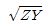
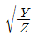
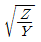
(정답률: 19%)
62. 저항 6[kΩ], 인덕턴스 90[mH], 커패시턴스 0.01[㎌]직렬 회로에 t=0에서 직류전압 100[V]를 인가했다. 흐르는 전류가 최대인 시간 T는?
- 30 sec
- 15 sec
- 30 μsec
- 15 μsec
(정답률: 10%)
63. 각상의 전류가 ia=30sinwt[A], ib=30sinwt[A],ic=30sin(wt+90°)[A] 일 때 영상 대칭분 전류는?
- 10simwt
- 30sinwt
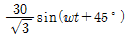
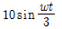
(정답률: 15%)
64. 그림과 같은 삼각파를 푸리에 급수로 전개하면?
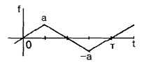
- 반파 정현 대칭으로 기수파만 포함한다.
- 반파 정현대칭으로 우수파만 포함한다.
- 반파 여현 대칭으로 기수파만 포함한다.
- 반파 여현 대칭으로 우수파만 포함한다.
(정답률: 14%)
65. 그림에서 전지 V1및 V2를 흐르는 전류가 0일 때 기전력 V1, V2및 저항 R1, R2의 관계는?
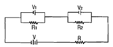
- V1V2=R1R2
- V1R1=V2R2
- V1R2=V2R1
- V12V2=R12R2
(정답률: 17%)
66. 비정현파의 여현대칭 조건은?
- f(t)=f(-t)
- f(t)=-f(t)
- f(t)=-f(-t)
- f(t)=-(t+T)
(정답률: 12%)
67. 그림과 같은 3상 Y결선 불평형 회로가 있다. 전원은 3상 평형전압 E1, E2, E3이고, 부하는 Y1, Y2, Y3 일 때, 전원의 중성점과 부하의 중성점간의 전위차를 나타내는 식은?
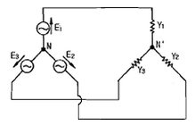
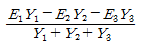
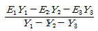
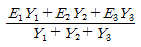
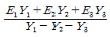
(정답률: 20%)
68. 다음과 같은 회로에서 전압비 전달함수
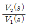
는?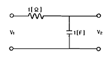
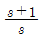
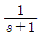
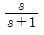
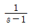
(정답률: 13%)
69. 그림에서 a-b단자의 전압이 10[V], a-b에서 본 능동 회로망 N의 임피던스가 4[Ω]일 때 단자 a-b간에 1[Ω]의 저항을 접속하면 a-b간에 흐르는 전류[A]는?
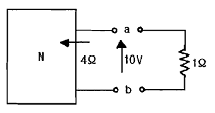
- 0.5[A]
- 1[A]
- 1.5[A]
- 2[A]
(정답률: 16%)
70.
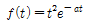
를 라플라스 변환하면?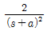
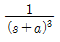
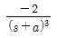
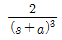
(정답률: 15%)
71. 특성 방정식
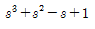
에서 안정근은 몇 개인가?- 0개
- 1개
- 2개
- 3개
(정답률: 13%)
72. 논리식
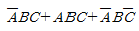
를 간단히 하면?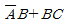
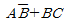
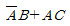
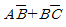
(정답률: 16%)
73. 다음은 단위계단 함수 u(t)의 라플라스 혹은 z 변환쌍을 나타낸 것이다. 이 중에서 옳은 것은?
- z[u(t)]=1
- z[u(t)]=1/z
- z[u(t)]=0
- z[u(t)]=z/(z-1)
(정답률: 17%)
74. 그림과 같은 벡터궤적(주파수 응답)을 나타내는 계의 전달함수는?
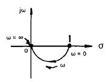
- s
- 1/s
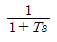
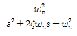
(정답률: 15%)
75. 다음 블록선도의 변환에서 ( )에 알맞은 것은?
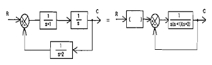
- s+2
- s+1
- s
- s(s+1)(s+2)
(정답률: 14%)
76. 제어 요소가 제어 대상에 주는 양은?
- 기준 입력
- 동작 신호
- 제어량
- 조작량
(정답률: 15%)
77. 개루프 전달함수가
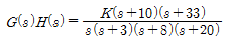
일 때의 근 궤적에서 점근선의 실수축과의 교차점은?- 24
- 12
- 6
- 3
(정답률: 17%)
78. 그림과 같은 신호흐름 선도의 전달함수는?
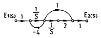
(정답률: 17%)
79. 일 때, x(t)는?
(정답률: 12%)
80. 인 계의 이득여유가 40[dB]이면, 이때의 K의 값은?
- -50
- 1/50
- -20
- 1/40
(정답률: 14%)
5과목: 전기설비기술기준 및 판단기준
81. 가요전선관 공사에 의한 저압 옥내배선으로 잘못된 것은?
- 2종 금속제 가요 전선관을 사용하였다.
- 규격에 적당한 지름 4[mm2]의 단선을 사용하였다.
- 전선으로 옥외용 비닐 절연 전선을 사용하였다.
- 사람이 접촉할 우려가 없어서 제 3종 접지 공사를 하였다.
(정답률: 19%)
82. 특고압 가공전선이 삭도와 제2차 접근 상태로 시설할 경우에 특고압 가공전선로는 어느 보안 공사를 하여야 하는가?
- 고압 보안공사
- 제1종 특고압 보안공사
- 제2종 특고압 보안공사
- 제3종 특고압 보안공사
(정답률: 16%)
83. 특고압 가공전선로의 지지물로 사용하는 철탑의 종류가 아닌 것은?
- 직선형
- 각도형
- 지지형
- 보강형
(정답률: 17%)
84. 건조한 장소로서 전개된 장소에 한하여 시설할 수 있는 고압 옥내배선의 방법은?
- 금속관 공사
- 가요 전선관 공사
- 합성 수지관 공사
- 애자사용 공사
(정답률: 19%)
85. 수력 발전소의 발전기 내부에 고장이 발생하였을 때 자동적으로 전로로부터 차단하는 장치를 시설하여야 하는 발전기 용량은 몇 [kVA] 이상인 것인가?
- 3000
- 5000
- 8000
- 10000
(정답률: 21%)
86. 전선의 단면적 55[mm2]인 경동연선을 사용하는 경우 특고압 가공전선로 경간의 최대한도는 몇 [m]인가? (단, 지지물은 목주 또는 A종 철주이다.)
- 150
- 250
- 300
- 500
(정답률: 13%)
87. 병원, 진료소 등의 진찰, 검사, 치료 또는 감시 등의 의료행위를 하는 의료실내에 시설하는 의료기기의 금속제 외함에 보호접지를 하는 경우 그 접지 저항값은 몇 [Ω]이하로 하여야 하는가?(관련 규정 개정전 문제로 기존 정답은 2번입니다. 여기서는 2번을 누르면 정답 처리 됩니다.)
- 5
- 10
- 30
- 50
(정답률: 20%)
88. 케이블 트레이 공사에 사용하는 케이블 트레이에 적합하지 않은 것은?
- 케이블 트레이가 방화구획의 벽 등을 관통하는 경우에는 개구부에 연소방지 시설이나 조치를 하여야 한다.
- 비금속재 케이블 트레이는 난연성 재료의 것이지 않아도 된다.
- 금속재의 것은 적절한 방식처리를 하거나 내식성 재료의 것이어야 한다.
- 금속제 케이블 트레이 계통은 기계적 또는 전기적으로 완전하게 접속하여야 한다.
(정답률: 22%)
89. 가공 공동지선을 설치하여 2 이상의 시설 장소에 공통의 제 2종 접지 공사를 하였다. 각 접지선을 가공 공동 지선으로부터 분리하였을 경우, 각 접지선과 대지간의 전기 저항치는 몇 [Ω]이하로 하여야 하는가?
- 300
- 150
- 60
- 30
(정답률: 11%)
90. 철도, 궤도 또는 자동차도 전용터널 안의 전선로를 시설할 때 저압 전선은 인장강도 몇 [kN] 이상의 절연전선을 사용하여야 하는가?
- 1.38 kN
- 2.30 kN
- 2.46 kN
- 5.26 kN
(정답률: 11%)
91. 금속 덕트 공사에 적당하지 않은 것은?
- 전선은 절연전선을 사용한다.
- 덕트 내에는 전선의 접속점이 없도록 한다.
- 덕트의 종단부는 항시 개방시킨다.
- 덕트의 안쪽 면 및 바깥 면에는 아연도금을 한다.
(정답률: 22%)
92. 최대 사용전압 60kV 이하의 정류기 절연내력 시험전압은 직류 측 최대 사용전압의 몇 배의 교류 전압인가?
- 1배
- 1.25배
- 1.5배
- 2배
(정답률: 7%)
93. 백열전등 또는 방전등에 전기를 공급하는 옥내의 전로의 대지 전압은 몇 [V] 이하로 하여야 하는가?
- 120
- 150
- 200
- 300
(정답률: 21%)
94. 동일 지지물에 고압 가공전선과 저압 가공전선을 병가할 때 저압 가공전선의 위치는?
- 저압 가공전선을 고압 가공전선 위에 시설
- 저압 가공전선을 고압 가공전선 아래에 시설
- 동일 완금류에 평행되게 시설
- 별도의 규정이 없으므로 임의로 시설
(정답률: 21%)
95. 유희용 전차 안의 전로 및 여기에 전기를 공급하기 위하여 사용하는 전기 설비는 다음에 의하여 시설하여야 한다. 옳지 않은 것은?
- 유희용 전차에 전기를 공급하는 전로에는 전용 개폐기를 시설할 것
- 유희용 전차안에 승압용 변압기를 시설하는 경우에는 그 변압기의 2차 전압은 300[V] 이하일 것
- 유희용 전차에 전기를 공급하는 전로의 사용 전압은 직류의 경우 60[V]이하, 교류의 경우는 40[V] 이하일 것
- 전로의 일부로서 사용하는 레일은 용접에 의한 경우 이외에는 적당한 본드로 전기적으로 접속할 것.
(정답률: 14%)
96. 목주, A종 철주 및 A종 철근 콘크리트주를 사용할 수 없는 보안공사는?
- 고압 보안공사
- 제 1종 특고압 보안공사
- 제 2종 특고압 보안공사
- 제 3종 특고압 보안공사
(정답률: 17%)
97. 사용 전압이 60[kV]이하의 특고압 가공전선로에서는 유도 장해를 방지하기 위하여 전화 선로의 길이 12[km] 마다 유도 전류가 몇 [㎂]를 넘지 아니하도록 하여야 하는가?
- 1
- 2
- 3
- 5
(정답률: 20%)
98. 강색 차선의 레일면상의 높이는 터널 안, 교량아래 기타 이와 유사한 곳에 시설하는 경우 최소 몇 [m] 이상으로 할 수 있는가?
- 2.5
- 3.0
- 3.5
- 4.0
(정답률: 11%)
99. 고압 및 특고압 가공 전선로로부터 공급을 받는 수용장소 인입구에 반드시 시설하여야 하는 것은?
- 피뢰기
- 방전 코일
- 분로 리액터
- 조상기
(정답률: 20%)
100. 나선을 사용한 고압 가공전선이 건조물의 상부 조영재의 옆쪽에 접근해서 시설되는 경우에 조영재 사이의 이격거리는 몇 [m] 이상이어야 하는가? (단, 전선에 사람이 쉽게 접촉할 우려가 있는 경우)
- 0.6
- 1.2
- 2.0
- 2.5
(정답률: 16%)
Q = mcΔT = 10[kg] × 4.18[J/g℃] × 50[℃] = 2090[kJ]
여기서 전열기의 출력은 2[kW]이므로 시간 t에 따른 열량은 다음과 같다.
Q = Pt = 2[kW] × t[min] × 60[s/min] × 1000[J/kW] = 120000[tJ/min]
따라서 시간 t는 다음과 같다.
t = Q/P = 2090[kJ] / 120000[tJ/min] = 17.4[min]
따라서 정답은 "17.4"이다.